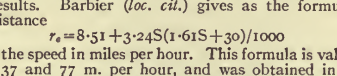
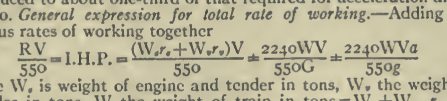

Scanning simple and complex math and chemical formulas.
Formulas and equations show up in many technical articles. Sometimes the formula is on a separate
line, but often it runs in with the texts. ABBYY FineReader does well with
simple formulas, but it cannot manage complex ones. We want to retain accuracy for
simple formulas, but complex ones must be left until later, and a note should be
placed in the inventory file for the page.
Simple
A simple formula or equation is one that is limited to a single line, and any fractions can be
expressed using the existing character set.Figure 1: Simple formula

Recognition accuracy may be lower for a formula than for text, for several
reasons. AFR does not have a dictionary for checking them against
known words. The subscript and superscript numerals and letters pose problems
because of their small size. And they use large numbers of special characters.
Greek characters (normally italicized) are in the "Basic Greek" symbols
subset.
Special math symbols, like ≤ and ≈, are in the "Mathematical Operators"
subset, though you will likely need to change your font from Times New Roman
to Arial Unicode MS to find most of them.
Complex
Complex formulas and equations are two or more lines, which AFR cannot read. Figure 2: Complex formula

If the formula occurs on a separate line, as in the illustration, then treat
it like an illustration. If it occurs on a line of text, do not worry about
correcting it.
Note: Add a comment in the inventory file for
the page, so we can go back and correct it later.